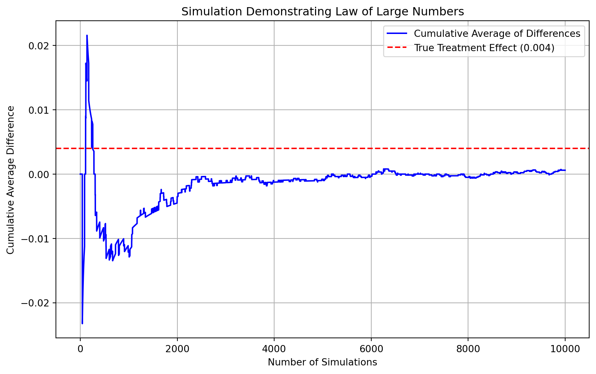

Dean Karlan at Yale and John List at the University of Chicago conducted a field experiment to test the effectiveness of different fundraising letters. They sent out 50,000 fundraising letters to potential donors, randomly assigning each letter to one of three treatments: a standard letter, a matching grant letter, or a challenge grant letter. They published the results of this experiment in the American Economic Review in 2007. The article and supporting data are available from the AEA website and from Innovations for Poverty Action as part of Harvard’s Dataverse.
Description of Experiment
In their 2007 study, Karlan and List implemented a large-scale natural field experiment to investigate how the match rate of matching grants influence charitable giving behavior. They employ a direct mail solicitation to explore whether and the extent to which, “price” i.e. cost to the donor of providing one dollar’s worth of public good to a nonprofit, is crucial in charitable fundraising.
The experiment involved 50,083 previous donors who had contributed, at least once since 1991, to a chosen liberal nonprofit organization in the United States. All individuals received one of the variations of a four page fundraising letter and reply card via direct mail, a standard channel used large charities in the US to ensure practical interest and high external validity. Furthermore, because the organization is politically engaged, this allows the team to explore heterogeneous treatment effects, particularly in how donors from “red” and “blue” states responded to the match offers.
Participants were randomly assigned to either a control group (approximately one-third of the sample) or a treatment group (the remaining two-thirds). The control group received a letter following the organization’s conventional format and a reply card with a large logo of the organization, while the treatment group received a letter that included an announcement on a “concerned fellow member” offering to match their donation, with a reply card that included the details of the match in bold font.
Within the treatment group, the experiment further varied the characteristics of the matching grant along three dimensions with equal probability:
First, the matching ratio was randomized to be either $1:$1, $2:$1, or $3:$1, meaning that for each dollar donated, the organization would receive an additional $1, $2, or $3, respectively. This allowed the researchers to test whether increasing the perceived “value” of a donation would lead to higher giving.
Second, the maximum size of the matching grant pool was varied, with donors being told it was capped at $25,000, $50,000, $100,000, or left unstated. This tested whether the size of the match fund—possibly perceived as a signal of the urgency or importance of the campaign—influenced donor behavior.
Third, the suggested donation amount was tailored to each donor’s prior giving history, using either the same amount as their highest previous contribution, or scaling it up by 1.25 or 1.5 times. The chosen example was used in the matching paragraph to illustrate the impact of their gift under the match.
The design of the experiment was intended not only to evaluate the overall impact of matching grants but also to probe how different configurations of the matching appeal might influence giving, by understanding the social behavioral mechanisms behind charitable donations like conformity, social norms, and reciprocity.
The key hypotheses in this experiment are:
Presence of a Matching Grant Increases Giving: Donors are more likely to contribute when a matching grant is offered, compared to when no match is offered.
Higher Match Ratios Lead to Higher Giving: Increasing the match ratio (e.g., from $1:$1 to $2:$1 or $3:$1) will further increase donation rates and total contributions by making the “price” of giving lower.
Larger Matching Grant Pools Increase Giving: Announcing a larger maximum size of the matching fund (e.g., $100,000 vs. $25,000) will lead to greater donations due to perceived urgency, credibility, or impact.
Higher Suggested Donation Amounts Influence Giving: Presenting donors with higher suggested donation amounts will lead to larger contributions, possibly by anchoring their perception of a “typical” or expected gift.
Donor Responsiveness to Matching Grants Varies by Political Context: Donors living in different political environments (e.g., red vs. blue states) will respond differently to the match offer, potentially due to identity, perceived relevance, or local norms.
This project seeks to replicate their results.
Data
Description
The dataset comprises over 50,000 individual-level observations from a natural field experiment testing how matching grants affect charitable giving. Each observation represents a prior donor to a politically liberal nonprofit organization in the U.S., who received a direct mail solicitation in 2005. The data include detailed treatment indicators, such as whether the individual received a matching grant (treatment), the match ratio (1:1, 2:1, or 3:1), the maximum match pool size (e.g., $25k, $50k), and suggested donation amounts based on their past giving. A tabulated description of the data variables id provided below, followed by a more detailed description:
Variable Definitions
Variable
Description
treatment
Treatment
control
Control
ratio
Match ratio
ratio2
2:1 match ratio
ratio3
3:1 match ratio
size
Match threshold
size25
$25,000 match threshold
size50
$50,000 match threshold
size100
$100,000 match threshold
sizeno
Unstated match threshold
ask
Suggested donation amount
askd1
Suggested donation was highest previous contribution
askd2
Suggested donation was 1.25 x highest previous contribution
askd3
Suggested donation was 1.50 x highest previous contribution
ask1
Highest previous contribution (for suggestion)
ask2
1.25 x highest previous contribution (for suggestion)
ask3
1.50 x highest previous contribution (for suggestion)
amount
Dollars given
gave
Gave anything
amountchange
Change in amount given
hpa
Highest previous contribution
ltmedmra
Small prior donor: last gift was less than median $35
freq
Number of prior donations
years
Number of years since initial donation
year5
At least 5 years since initial donation
mrm2
Number of months since last donation
dormant
Already donated in 2005
female
Female
couple
Couple
state50one
State tag: 1 for one observation of each of 50 states; 0 otherwise
nonlit
Nonlitigation
cases
Court cases from state in 2004-5 in which organization was involved
statecnt
Percent of sample from state
stateresponse
Proportion of sample from the state who gave
stateresponset
Proportion of treated sample from the state who gave
stateresponsec
Proportion of control sample from the state who gave
stateresponsetminc
stateresponset - stateresponsec
perbush
State vote share for Bush
close25
State vote share for Bush between 47.5% and 52.5%
red0
Red state
blue0
Blue state
redcty
Red county
bluecty
Blue county
pwhite
Proportion white within zip code
pblack
Proportion black within zip code
page18_39
Proportion age 18-39 within zip code
ave_hh_sz
Average household size within zip code
median_hhincome
Median household income within zip code
powner
Proportion house owner within zip code
psch_atlstba
Proportion who finished college within zip code
pop_propurban
Proportion of population urban within zip code
Data Description Stats
treatment
control
ask1
ask2
ask3
amount
gave
amountchange
hpa
freq
years
mrm2
nonlit
cases
statecnt
stateresponse
stateresponset
stateresponsec
stateresponsetminc
perbush
pwhite
pblack
page18_39
ave_hh_sz
median_hhincome
powner
psch_atlstba
pop_propurban
50083
50083
50083
50083
50083
50083
50083
50083
50083
50083
50082
50082
49631
49631
50083
50083
50083
50080
50080
50048
48217
48047
48217
48221
48209
48214
48215
48217
0.666813
0.333187
71.5018
91.7927
111.046
0.915694
0.0206457
-52.672
59.385
8.03935
6.09754
13.0073
2.47392
1.49977
5.99882
0.0206269
0.0219885
0.0177167
0.00427312
0.48794
0.819599
0.0867098
0.321694
2.42901
54815.7
0.669418
0.391661
0.871968
0.471357
0.471357
101.729
127.253
151.674
8.70739
0.142197
1267.1
71.1799
11.3945
5.50349
12.0814
1.96153
1.15514
5.74599
0.0051708
0.00625721
0.00751621
0.00911209
0.0787327
0.16856
0.135868
0.103039
0.378105
22027.3
0.193405
0.186599
0.258633
0
0
25
35
50
0
0
-200412
0
0
0
0
0
0
0.00199481
0
0
0
-0.047619
0.0909091
0.00941798
0
0
0
5000
0
0
0
0
0
35
45
55
0
0
-50
30
2
2
4
1
1
1.83323
0.0181635
0.0184932
0.0128617
-0.00138826
0.444444
0.755845
0.0147292
0.258311
2.21
39181
0.560222
0.235647
0.884929
1
0
45
60
70
0
0
-30
45
4
5
8
3
1
3.5388
0.0197095
0.0216972
0.0198814
0.00177869
0.484848
0.872797
0.0365541
0.305534
2.44
50673
0.712296
0.373744
1
1
1
65
85
100
0
0
-25
60
10
9
19
4
2
9.60702
0.0230482
0.0247027
0.0208062
0.0105448
0.525253
0.938827
0.090882
0.369132
2.66
66005
0.816798
0.530036
1
1
1
1500
1875
2250
400
1
275
1000
218
95
168
6
4
17.3688
0.0769231
0.111111
0.0526316
0.111111
0.731959
1
0.989622
0.997544
5.27
200001
1
1
1
The donation rate across the sample was around 2.1%, and the average change in donation amount was a decrease of $52.67, reflecting the typical non-responsiveness of most individuals.
Donor histories show that the average highest prior contribution was about $59.39, and the typical donor had given eight times over six years, with about 13 months since their last gift. Roughly 49% were small prior donors (last gift under $35), and 51% had been donors for five or more years, suggesting a base of moderately engaged supporters. The donor base was predominantly male—only 28% of donors were female—and about 9% were identified as couples, which could potentially reflect joint giving decisions or household-level donation behavior.
In terms of geographic and political context, 40% of donors were from red states, 60% from blue states, and about half lived in red counties. The average vote share for George W. Bush in the donors’ states was just under 49%, with around 18.5% living in politically competitive states (close25). The treatment increased the average response rate by about 0.43 percentage points, with the treated group’s response rate at 2.2%, compared to 1.8% in the control. Additionally, the nonprofit was moderately active in most states, averaging about 2.47 nonlitigation events (public education campaigns, policy advocacy or lobbying, community organizing public events or speaking engagements etc.) and 1.5 legal cases per state, offering a measure of the organization’s local visibility.
Finally, the dataset includes zip-code-level demographics that add further context to donor behavior. On average, zip codes were 82% white, with about 32% of the population aged 18–39. The median household income was approximately $54,816, and about 67% of residents were homeowners. Nearly 39% had at least a bachelor’s degree and 87% lived in urban areas. Majority of the donors were male (72.2%). These contextual data allow for analysis of how local socioeconomic factors interact with donor responses to the match offer, enriching the study’s implications for both behavioral economics and nonprofit strategy.
Distribution and Frequency Plots of Donation Amount from donors who gave based on past donation and financial status data and variables being modified
The distributions of key variables reveal that most donors in the experiment were low-frequency, small-dollar contributors, with past donations typically under $100 and fewer than 10 total gifts. While a few donors were highly engaged or generous, they were the exception. The years since first donation were spread relatively evenly, suggesting a mix of both new and long-term supporters. Most recent donations occurred within the last few months, indicating a strong recency effect. Donors primarily lived in zip codes with median household incomes between $30,000 and $70,000, though some resided in wealthier areas.
On the experimental side, the match ratio, match threshold, and suggested donation amount were all well balanced across groups, with no major disparities—indicating successful randomization. These distributions support the validity of comparisons across treatment groups and suggest that variables like recency of donation and donor longevity may be strong predictors of giving behavior.
Distribution and Frequency Plots of Donation Amount from donors who gave based on donor characteristics, geopolitical context, and location (zipcode) demographics
The visualizations show how donation amounts vary across donor characteristics, political context, and zip-code demographics. Donors who were previously small contributors (ltmedmra = 1) or had donated for over 5 years (year5 = 1) gave slightly more on average. Male donors gave more than female donors, and donors from blue states (red0 = 0) gave higher amounts than those from red states. Donation amounts increased with moderate values of Bush vote share (perbush) but not at extremes. Donations also varied non-linearly with the number of non-litigation activities in a state (nonlit). From a demographic perspective, donation amounts peaked among donors from zip codes with moderate income levels, higher homeownership (powner), and moderately educated areas (psch_atlstba), suggesting that both neighborhood affluence and stability may influence giving behavior.
Balance Test
As an ad hoc test of the randomization mechanism, I provide a series of tests that compare aspects of the treatment and control groups to assess whether they are statistically significantly different from one another.
Check the control and treatment groups are balanced on the following variables through the use of t-tests and linear regression
Variable
Manual T-Stat
Critical Value
Manual Test Conclusion
Regression T-Stat
Regression P-Value
Regression Conclusion
freq
-0.1108
1.96
Not Significant
-0.1108
0.9117
Not Significant
year5
-1.5627
1.96
Not Significant
-1.5627
0.1181
Not Significant
female
-1.7535
1.96
Not Significant
-1.7535
0.0795
Not Significant
mrm2
0.1195
1.96
Not Significant
0.1195
0.9049
Not Significant
red0
1.8773
1.96
Not Significant
1.8773
0.0605
Not Significant
perbush
2.7463
1.96
Significant
2.7463
0.006
Significant
nonlit
1.7052
1.96
Not Significant
1.7052
0.0882
Not Significant
median_hhincome
-0.7433
1.96
Not Significant
-0.7433
0.4573
Not Significant
powner
0.1895
1.96
Not Significant
0.1894
0.8498
Not Significant
psch_atlstba
-1.8427
1.96
Not Significant
-1.8427
0.0654
Not Significant
To assess the integrity of the randomization mechanism, a series of balance tests comparing several pre-treatment variables across the treatment and control groups was conducted. Using both manual t-tests and linear regressions, I evaluated characteristics such as donation history [‘freq’, ‘year5’, ‘female’,‘mrm2’], demographics[‘red0’, ‘perbush’, ‘nonlit’], and geographic context[‘median_hhincome’, ‘powner’, ‘psch_atlstba’]. While Table 1 in the paper presents descriptive statistics to suggest baseline balance, my analysis formally tests for statistical differences between groups.
The results show that, at the 95% confidence level, most variables show no significant differences, consistent with Table 1, except perbush, which measures the state vote share for George W. Bush in the 2004 presidential election—were not statistically significantly different between the groups. The one significant difference in perbush (t = 2.75, p = 0.006) suggests that individuals in the treatment group were more likely to come from states that leaned Republican in 2004. This imbalance is particularly notable given that the paper finds the treatment effect (i.e., the impact of matching gifts) to be much stronger in “red” states than in “blue” ones.
While the randomization appears to have succeeded for most covariates, the imbalance in perbush raises the possibility that some of the observed treatment effect could be confounded by political context. This supports the paper’s observation that treatment effectiveness may vary by political geography, and highlights the importance of considering perbush as a potential moderator in further analysis, as stated ” We find that the matching gift result is driven by agents in states that voted for George W. Bush in the 2004 presidential election: the match increases the revenue per solicitation by 55 percent in “red” states whereas there was little effect observed in “blue” states”.
The following code performs the necessary analysis:
import pandas as pdfile_path ='karlan_list_2007.dta'df1 = pd.read_stata(file_path)df1['gender'] = df1['female'].apply(lambda x: 'F'if x ==1else'M')df = df1.copy()categorical_vars = ['ratio', 'ratio2', 'ratio3','size', 'size25', 'size50', 'size100', 'sizeno','askd1', 'askd2', 'askd3','ltmedmra', 'year5', 'dormant','female', 'couple', 'state50one', 'close25', 'red0', 'blue0', 'redcty', 'bluecty']# Convert to categoricaldf[categorical_vars] = df[categorical_vars].astype('category')import numpy as npimport statsmodels.api as smfrom scipy.stats import tdonor_characteristics = ['freq', 'year5', 'female','mrm2'] geo_political_context = ['red0', 'perbush', 'nonlit']zip_code_demographics = ['median_hhincome', 'powner', 'psch_atlstba']all_vars = donor_characteristics + geo_political_context + zip_code_demographics# Set significance levelalpha =0.05# Store resultsresults = []for v in all_vars:# Drop missing data treatment = df[df['treatment'] ==1][v].dropna() control = df[df['control'] ==1][v].dropna()# Convert categorical variables to numeric if necessaryif treatment.dtype.name =='category': treatment = treatment.astype(int)if control.dtype.name =='category': control = control.astype(int)# Manual t-test mean_diff = treatment.mean() - control.mean() var_treatment = treatment.var(ddof=1) var_control = control.var(ddof=1) n_treatment =len(treatment) n_control =len(control) pooled_se = ((var_treatment / n_treatment) + (var_control / n_control))**0.5 manual_t_stat = mean_diff / pooled_se df_degrees = n_treatment + n_control -2 critical_value = t.ppf(1- alpha/2, df_degrees) manual_conclusion ="Significant"ifabs(manual_t_stat) > critical_value else"Not Significant"# Regression X = df['treatment'] y = df[v] X = sm.add_constant(X) model = sm.OLS(y, X, missing='drop').fit(cov_type='HC1') reg_t_stat =round(model.tvalues['treatment'], 4) reg_p_value =round(model.pvalues['treatment'], 4) reg_conclusion ="Significant"if reg_p_value < alpha else"Not Significant"# Store the results results.append({"Variable": v,"Manual T-Stat": round(manual_t_stat, 4),"Critical Value": round(critical_value, 4),"Manual Test Conclusion": manual_conclusion,"Regression T-Stat": reg_t_stat,"Regression P-Value": reg_p_value,"Regression Conclusion": reg_conclusion })results_df = pd.DataFrame(results)results_df
Variable
Manual T-Stat
Critical Value
Manual Test Conclusion
Regression T-Stat
Regression P-Value
Regression Conclusion
0
freq
-0.1108
1.96
Not Significant
-0.1108
0.9117
Not Significant
1
year5
-1.5627
1.96
Not Significant
-1.5627
0.1181
Not Significant
2
female
-1.7535
1.96
Not Significant
-1.7535
0.0795
Not Significant
3
mrm2
0.1195
1.96
Not Significant
0.1195
0.9049
Not Significant
4
red0
1.8773
1.96
Not Significant
1.8773
0.0605
Not Significant
5
perbush
2.7463
1.96
Significant
2.7463
0.0060
Significant
6
nonlit
1.7052
1.96
Not Significant
1.7052
0.0882
Not Significant
7
median_hhincome
-0.7433
1.96
Not Significant
-0.7433
0.4573
Not Significant
8
powner
0.1895
1.96
Not Significant
0.1894
0.8498
Not Significant
9
psch_atlstba
-1.8427
1.96
Not Significant
-1.8427
0.0654
Not Significant
Experimental Results
Charitable Contribution Made
First, I analyze whether matched donations lead to an increased response rate of making a donation.
The proportion of donors who made a donation in the treatment group was 2.2%, compared to 1.8% in the control group, wchih seems roughly equivalent. However, this also suggests that the matching grant increased the likelihood of making a donation by about 0.4 percentage points, or roughly 22% relative to the control group. It is also to be noted that participants were randomly assigned to either a control group (approximately one-third of the sample) or a treatment group (the remaining two-thirds), suggesting that the treatment group may have more statistical power to detect differences in the response rate.
Impact of Matching Gifts on Donation Likelihood: Evidence from a Bivariate Regression
Next in my analysis, I ran a bivariate linear regression to test whether being in the treatment group—receiving a letter that included a matching donation offer—increased the likelihood of making a charitable donation. Using the binary outcome variable gave, I found that being in the treatment group increased the probability of donating by approximately 0.42 percentage points (coefficient 0.0042), keeping all else constant, while the intercept (0.0179) tells us the predicted probability of donating for someone in the control group. This result was statistically significant (p = 0.0019), indicating a real and measurable effect that is unlikely due to chance. The results are documented here:
Variable
Coefficient
Standard Error
t-Statistic
p-Value
CI Lower (95%)
CI Upper (95%)
const
0.0178582
0.00110068
16.2246
4.77903e-59
0.0157009
0.0200156
treatment
0.00418035
0.00134791
3.10136
0.0019274
0.00153844
0.00682227
My findings closely match the descriptive statistics reported in Table 2A, Panel A of the paper, which shows a response rate of 2.2% for the treatment group versus 1.8% for the control group—also a 0.4 percentage point difference. While small in absolute terms, this represents a 22% relative increase in giving behavior, suggesting that individuals are more likely to donate when they believe their contribution will have greater impact. This supports the broader conclusion of the study: that subtle nudges, like matching gifts, can meaningfully influence human behavior by increasing the perceived value of giving. The result reinforces the idea that charitable behavior is not just about fixed generosity levels, it’s also about how the opportunity to give is presented.
Treatment or Control Group Assignment Effect on Donor Behavior: Probit Evidence from a Charitable Giving Experiment
Following this, I ran a Probit regression to examine whether being assigned to the treatment group (receiving a fundraising letter that included a matching donation offer) or control group affected the likelihood of making a charitable donation. The model found a positive and statistically significant treatment effect, with a coefficient of 0.0868 and a p-value of 0.0019, indicating the result is statistically significant, and unlikely due to chance.While the coefficient itself isn’t directly interpretable in percentage points (as it is in linear regression), the positive sign means that individuals in the treatment group were more likely to donate than those in the control group. The results are as follows:
Variable
Coefficient
Standard Error
t-Statistic
p-Value
CI Lower (95%)
CI Upper (95%)
const
0.0178582
0.00110068
16.2246
4.77903e-59
0.0157009
0.0200156
treatment
0.00418035
0.00134791
3.10136
0.0019274
0.00153844
0.00682227
This aligns with earlier findings from the linear regression and confirms the descriptive results shown in Table 2A, where donation rates were higher in the treatment group.
Therefore, this result reinforces that people who received a letter offering a matching donation were more likely to give than those who did not. While the actual increase in probability isn’t directly visible from the Probit coefficient, the positive and significant effect confirms that the matching offer changed behavior. This suggests that people are responsive to how giving is framed, in this case, making their contribution feel more impactful through a match. Even when the baseline donation rate is low, a small psychological nudge like a match can increase engagement and drive meaningful behavior change.
NOTE: Linear regression results appear replicate Table 3 column 1 in the paper. Probit results do not, despite Table 3 indicating its results come from probit regressions.Probit regression results don’t match Table likely, because that table reports marginal effects (the estimated change in probability of donating when moving from control to treatment) than the raw coefficients from a Probit model. However, my Probit regression includes only the basic treatment indicator and outputs the raw coefficient, not the marginal effect. In a linear probability model (ordinary least squares on a binary outcome), the coefficient directly estimates the marginal effect, which is why the linear regression results match table 3 column 1.
Differences between Match Rates
Next, I assess the effectiveness of different sizes of matched donations on the response rate.
Using a series of t-tests to test whether the size of the match ratio has an effect on whether people donate or not
Comparison
Group 1 Mean Donation Rate
Group 2 Mean Donation Rate
Mean Diff (pp)
T-Statistic
Critical Value (±)
Conclusion
2:1 vs 1:1
2.26
2.07
0.19
0.965
1.9601
Not Significant
3:1 vs 1:1
2.27
2.07
0.2
1.015
1.9601
Not Significant
3:1 vs 2:1
2.27
2.26
0.01
0.0501
1.9601
Not Significant
To test whether the size of the match ratio affected donation behavior, I conducted a series of t-tests comparing donation rates across 1:1, 2:1, and 3:1 match groups. The results show that while donation rates were slightly higher for the 2:1 (2.26%) and 3:1 (2.27%) match groups compared to the 1:1 group (2.07%), these differences were not statistically significant at the 95% confidence level. Similarly, there was no meaningful difference between the 3:1 and 2:1 groups. All t-statistics were well below the critical threshold of 1.96, and all p-values exceeded 0.05.
These findings suggest that simply increasing the generosity of the match offer, from 1:1 to 2:1 or 3:1, did not significantly increase the likelihood that someone would donate. In other words, while matching gifts appear to influence behavior overall, there is no strong evidence that larger match ratios (beyond 1:1) further increase donation rates. This directly aligns with authors’ statement in page 8 that larger match ratios (2:1, 3:1) did not have a meaningful influence on donation behavior, at least not in a statistically significant way. This confirms the idea that donors respond to the presence of a match offer, but are not particularly sensitive to how generous the match is.
Using a series of linear regressions to test whether the size of the match ratio has an effect on whether people donate or not
I ran a linear regression to evaluate whether the size of the match ratio (1:1, 2:1, or 3:1) had an effect on the likelihood of making a donation (gave, a binary variable). The model included dummy variables ratio1, ratio2, and ratio3 as independent variables, representing each of the three match groups. “ratio1” was created by flagging the cases where raio2 and ratio3 are 0, in the treatment group. The regression included a constant term, so the effect of each ratio variable is measured relative to an implicit baseline (control group).
It is observed from the results of the linear regression that All three coefficients (ratio1, ratio2, and ratio3) are extremely large negative numbers (~-1.23e+10), and all are identical, which is a red flag. The standard errors are also enormous (~1.54e+11), resulting in very small t-statistics (≈ -0.08) and very high p-values (~0.936). Moreover, none of the coefficients are statistically significant, and the model R² is effectively 0, meaning the model explains none of the variation in donation behavior.
The results show clear signs of a severe multicollinearity or design matrix error, likely caused by including all three dummy variables (ratio1, ratio2, ratio3) without dropping a reference group. Since the three dummies are mutually exclusive and exhaustive (they sum to 1), including all of them with a constant creates a perfect linear dependency, which leads to a singular matrix and unreliable coefficient estimates. To fix this, I omit one of the ratio dummies (e.g., drop ratio1) so that the remaining coefficients (ratio2 and ratio3) are interpreted relative to the 1:1 match group.
The results now show the following:
Variable
Coefficient
Standard Error
t-Statistic
p-Value
CI Lower (95%)
CI Upper (95%)
const
0.0190151
0.000852479
22.3056
1.11719e-109
0.0173442
0.020686
ratio2
0.00361828
0.00159454
2.26917
0.023262
0.000492971
0.00674359
ratio3
0.0037183
0.00159479
2.33153
0.0197294
0.000592493
0.00684411
The intercept (0.0190) indicates that the average donation rate in the 1:1 match group was approximately 1.9%.
The coefficient for ratio2 is 0.0036, which means that the 2:1 match group donated at a rate that was 0.36 percentage points higher than the 1:1 group. This effect is statistically significant at the 5% level (p = 0.023).
The coefficient for ratio3 is 0.0037, meaning the 3:1 match group donated 0.37 percentage points more than the 1:1 group. This is also statistically significant (p = 0.020).
It is also to be noted that the model R^ is effectively 0, indicating that the model explains almost none of the variation in donation behavior.
Thus, the regression provides evidence that larger match ratios do modestly increase the likelihood of donating, compared to a standard 1:1 match. While the increases (less than half a percentage point) are small in absolute terms, they are statistically significant, suggesting that donors do respond to more generous match offers, even if the effect size is limited. This complements earlier t-test findings and supports the idea that match generosity does matter, but only slightly.
Response rate difference between 1:1, 2:1, and 3:1 match ratios
I now calculate the response rate difference between the 1:1 and 2:1 match ratios and the 2:1 and 3:1 ratios, both directly from the data and from the differences in the fitted coefficients in the previous regression. The response rates are as follows:
2:1 vs 1:1 response rate difference: 0.0019 3:1 vs 2:1 response rate difference: 0.0001 Response rate difference from coefficients (2:1 - 1:1): 0.0036 Response rate difference from coefficients (3:1 - 2:1): 0.0001
These results suggest that increasing the match ratio from 1:1 to 2:1 has a modest but meaningful effect on donor behavior (The 2:1 match group donated at a rate 0.19 percentage points higher as per the data, and 0.36 percentage points higher as per the difference from the coefficients, than the 1:1 group). However, increasing the match further from 2:1 to 3:1 offers almost no additional benefit (0.0001). Donors seem responsive to the presence and basic enhancement of a match, but not to increasingly generous match sizes beyond a certain point.
NOTE: The small difference between your raw mean comparison and regression coefficient comes from how OLS regression estimates parameters (by minimizing squared errors)
Size of Charitable Contribution
In this subsection, I analyze the effect of the size of matched donation on the size of the charitable contribution.
T-test of donation amount on the treatment status
First, I conduct a t-test to compare the average donation amount between individuals in the treatment group (who received a matching gift offer) and those in the control group (no match).
The analysis included all individuals, regardless of whether they donated or not. The Mean donation (treatment group) is $0.97 and the Mean donation (control group) is $0.81. The observed t-stat was 1.9182, at a p-value of 0.0551, which is statistically insignificant.While the treatment group gave slightly more on average, the p-value is just above the conventional 0.05 threshold, meaning the result is not statistically significant at the 95% confidence level.
Overall, this analysis suggests that people who received a matching gift offer tended to donate more on average, but the evidence is not strong enough to confirm that this difference is due to the treatment rather than random chance. The p-value (0.055) is close to the significance cutoff, which means there might be a weak effect, but it’s not statistically conclusive.
T-test of donation amount on the treatment status using only data from people who actually donated
I also conducted an analysis including only individual from both group who donated (gave == 1). The mean donation among the treatment group was $43.87, while the control group gave slightly more on average, at $45.54. The observed t-statistic was -0.581 with a p-value of 0.561, which is well above the conventional 0.05 threshold. Similar to the analysis above, this means the difference is not statistically significant at the 95% confidence level, and we cannot conclude that the treatment had an effect on donation amount among donors.
Confirming the t-stat and p-values using a bivariate regression of amount on treatment, conditional on donation, I took a deeper look at the regression coefficients. The regression coefficient for treatment is -1.67, meaning that, on average, donors in the treatment group gave $1.67 less than those in the control group, keeping all else constant. However, this difference is not statistically significant (p = 0.561), and the confidence interval ranges from about –$7.31 to +$3.97, meaning the true effect could easily be zero or even slightly positive. The results are as follows:
Variable
Coefficient
Standard Error
t-Statistic
p-Value
CI Lower (95%)
CI Upper (95%)
const
45.5403
2.42338
18.7921
5.47358e-68
40.785
50.2956
treatment
-1.66839
2.87238
-0.580839
0.561476
-7.30477
3.96799
Overall, the analysis results do not support the idea that matching gifts increase donation size once someone is already giving. It is also to be noted that, by restricting the analysis to only people who gave, there is potential conditioning on a post-treatment outcome, and that can introduce selection bias. Therefore, the coefficient no longer reflects a clean causal effect, it’s just a descriptive comparison among people who chose to give. However, in the full sample, since treatment group was randomly assigned, there’s no systematic difference between the treatment and control groups, also verified by the mostly balanced dataset in the analysis in the first section, so the treatment effect can be interpreted as a causal effect.
Histogram plots of donation amounts for treatment and control groups, only among people who donated
The histograms display the distribution of donation amounts among individuals who donated, separated by treatment and control groups. Both groups exhibit a strong right skew, with most donations falling below $100 and a small number of large donations extending the tail of the distribution. The treatment group shows a higher concentration of smaller donations, while the control group has a slightly more even spread, including more mid-sized donations. The mean donation amount is slightly higher in the control group ($45.54) compared to the treatment group ($43.87), but this difference is small and not statistically significant, as seen in the analysis above.
Simulation Experiment
As a reminder of how the t-statistic “works,” in this section I use simulation to demonstrate the Law of Large Numbers and the Central Limit Theorem.
Suppose the true distribution of respondents who do not get a charitable donation match is Bernoulli with probability p=0.018 that a donation is made (control).
Further suppose that the true distribution of respondents who do get a charitable donation match of any size is Bernoulli with probability p=0.022 that a donation is made (treatment).
Law of Large Numbers
Simulating 10,000 draws from the control distribution and 10,000 draws from the treatment distribution, using a Bernoulli distribution. I then calculate a vector of 10,000 pairwise differences between each treatment and control outcome, and then plot the cumulative average of that vector of differences.
At the beginning (small sample sizes), the average is highly variable and “noisy”, sometimes jumping well above or below the true value (0.004).
As more simulations are added, the cumulative average should settle down and converges toward the true treatment effect of 0.004, shown by the red dashed line. However, in my plot, the cumulative average converges slightly above the true treatment effect. This is likely due to the random nature of the simulation, as a result of which our sample has slightly more donors than expected in the treatment group/ slightly fewer donors than expected in the control group. Or it could be that in this first run, the simulated sample overestimated the effect of treatment slightly and converged at around 0.007.
Upon running the simulation a second time, and other subsequent runs, a plot similar to the one above is observed, where, as per the Law of Large Numbers the sample average eventually converges to the true average in expectation, at 0.004. This chart shows that even though individual samples may vary due to chance, the average across many independent observations eventually reflects the true underlying effect. This is the statistical foundation behind large-scale experiments and why we rely on big samples for inference.
The following Python code simulates 10,000 Bernoulli trials from a control and treatment group, calculates their cumulative average difference, and plots the result.
import numpy as npimport matplotlib.pyplot as plt# True probabilitiesp_control =0.018# do not get any charitable matchp_treatment =0.022# get a charitable match of any sizen =10000# Simulate 10,000 Bernoulli draws from each groupcontrol = np.random.binomial(1, p_control, n)treatment = np.random.binomial(1, p_treatment, n)# Compute differences between each draw (pairwise)differences = treatment - control # each element is 0, +1, or -1# Cumulative average of the differencescumulative_avg_diff = np.cumsum(differences) / np.arange(1, n +1)# Plottingimport matplotlib.pyplot as pltplt.figure(figsize=(10, 6))plt.plot(cumulative_avg_diff, label="Cumulative Average of Differences", color='blue')plt.axhline(0.004, color='red', linestyle='--', label="True Treatment Effect (0.004)")plt.xlabel("Number of Simulations")plt.ylabel("Cumulative Average Difference")plt.title("Simulation Demonstrating Law of Large Numbers")plt.legend()plt.grid(True)plt.show()

Central Limit Theorem
In order to explore the Central Limit Theorem, I generated four histograms of the average differences between treatment and control groups at sample sizes of 50, 200, 500, and 1000. Each histogram represents the distribution of the average differences in treatment and control groups (using two Bernoulli distributions: control group with a 1.8% donation rate, treatment group with a 2.2% donation rate) from 1000 simulations at each sample size.
This sequence of histograms demonstrates the Central Limit Theorem by showing how the distribution of average treatment effects becomes more normal and concentrated as the sample size increases. Each histogram represents 1,000 simulated differences in donation rates between treatment and control groups, using sample sizes of 50, 200, 500, and 1,000. At smaller sample sizes, the distribution of average effects is wide and irregular, reflecting high variability. As the sample size grows, the distributions become more bell-shaped, centered near the true treatment effect of 0.004, and show reduced spread. This illustrates that as sample size increases, the sampling distribution of the average treatment effect becomes approximately normal and more precise—just as the Central Limit Theorem predicts.
The following Python code Simulates 1,000 experiments for each of 4 different sample sizes (n = 50, 200, 500, 1000), collects the 1,000 differences and plots a histogram for each sample size.